A detailed step-by-step guide — what Google Pics can do, how it differs from using NanoBanana in Gemini, a Scuti AI poster demo, and how to apply it to everyday work
Written: Oct 3, 2026 • Sources: Official video • Workspace Updates Blog • Product page
record_pics_live.py drove the UI, took the screenshots and recorded the video.Google Pics is Google Workspace's new AI image creation and editing tool, generally available since September 1, 2026. According to Workspace Updates, Pics brings “advanced AI image generation and precise, object-based image editing directly into your Workspace creative workflow”.
The key to understanding Pics: the official video description says it is “Built on our Nano Banana image generation and editing model”, and the Help Center says “Google Pics is an image creation and editing tool powered by Gemini (Nano Banana)”. In other words, NanoBanana is the engine (the model) and Google Pics is the car (the product/canvas) designed for visual work inside Workspace.
pics.new (redirects to docs.google.com/images/create), or from Google Slides, Docs and Drive.| Group | Feature | Details (Help Center / blog) |
|---|---|---|
| Create | Text-to-image | Write a prompt in the bottom bar → Pics produces several versions in the left panel; click Retry for more. |
| Reference images | Add images (drag & drop, paste, Add images) to reuse elements/colors, e.g. “Use the blue in this image as the background”. | |
| Style reference | Style button: borrow the look of an image from computer, Drive or Google Photos (English only for now). | |
| Edit | Whole-image prompt edits | e.g. “Desaturate the photo slightly and add cooler tones to shadows”. |
| Object-based edits | Hover → click an element (e.g. “Floor”) → prompt → Add; queue up to 5 changes and click Apply edits once. You can also drag to select an area. | |
| Edit / translate text | Pics detects text; click it to change wording or style (“make the text bold”), or translate a whole flyer with one prompt. | |
| Crop, rotate, aspect ratio | 16:9, 1:1, 4:3… for web, social and print. | |
| Export & collaborate | Download | JPEG in Original, 2K, 4K (higher resolutions consume limits faster). Print directly. |
| Version history | Persistent history to revert unwanted changes. | |
| Drive-style sharing | Viewer/Editor access; collaborators can edit and save. | |
| Integrations | Slides, Docs, Drive | In Slides: click image → Edit image → Pics opens inside Slides → Replace image. You can minimize Pics and keep working while it generates. |
NanoBanana is the name of Gemini's image model family: first Gemini 2.5 Flash Image (Aug 2025), then Nano Banana Pro (Gemini 3 Pro Image) and Nano Banana 2 (Gemini 3.1 Flash Image). People usually reach it through the Gemini app (chat → “Create image”), the Gemini API / AI Studio / Vertex AI, or image generation in Slides/Docs. Google Pics uses NanoBanana under the hood and adds a canvas built for design work.
| Criteria | Google Pics | NanoBanana (Gemini app / API) |
|---|---|---|
| What it is | A Workspace product/app (like Docs, Slides) | An AI model for creating & editing images |
| Interface | Canvas + prompt bar + versions panel + toolbar (Crop, Zoom, Undo, Download, Share) | Chat window (Gemini app) or API request |
| How you edit | Click individual elements, drag-select areas, click text to edit; queue up to 5 edits then Apply | Mostly describe the change in conversation; the model infers which region to change |
| Options | Several variations by default, Retry for more | Typically one image per turn; ask again for more |
| Text in images | Detected as editable elements; translation keeps fonts/layout | Good text rendering, but edits go through descriptive prompts |
| Finishing | Crop/rotate/aspect ratio, download Original / 2K / 4K | Aspect ratio/resolution via prompt or API parameters |
| Storage & versions | Saved like a Workspace file, version history, Viewer/Editor sharing | Images live in chat history; you download and manage them |
| Integration | Opens inside Slides/Docs/Drive, “Replace image” | API for your own apps, automated pipelines, batches |
| Governance | Admin on/off per OU/group, Workspace data policies | Gemini app per account; API per Cloud/AI Studio project |
| Cost / access | Included with Workspace Business Standard+ / AI Pro, Ultra; usage limits apply | Gemini app limits per plan; API billed per image |
| Best for | Office staff, marketing, PMs who need precise edits fast | Developers, automation, bulk generation, quick ideation |
Part A was run with trial_playwright.py (Python Playwright, real Chrome via channel="chrome", a dedicated profile, no sign-in) and recorded into the video in Section 6.
A 1:38 video from the Google Workspace channel (Sep 1, 2026). The description states Pics is “Built on our Nano Banana image generation and editing model”.
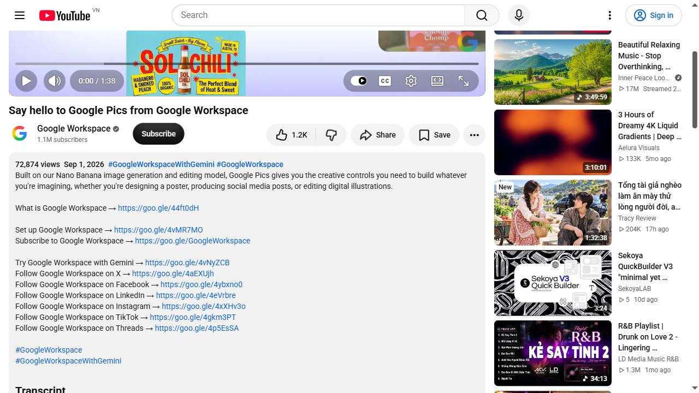
Around 0:18, after prompting an “Oakwood Street Fair” poster, Pics shows 4 versions in the left column — a big difference from one-image-per-turn chat.
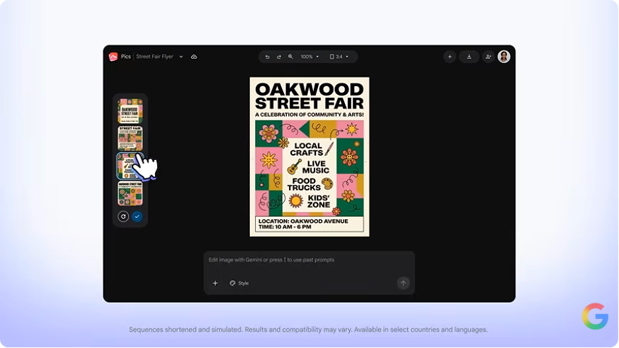
Click one decorative tile → small pop-up → type An illustration of a taco → Add. The rest of the poster stays intact.
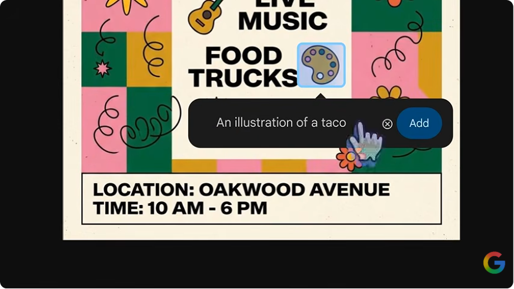
Pics detects the “THANKS FOR BEING A VALUED CUSTOMER” card in a gift box and opens the Edit text tab to retype it, then Save.
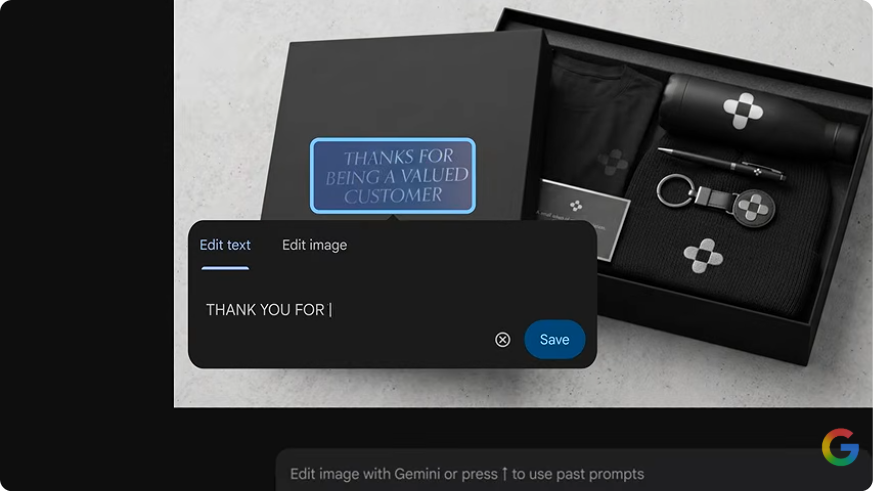
“Translate the flyer into …” turns the poster into Spanish while keeping layout, colors and fonts.
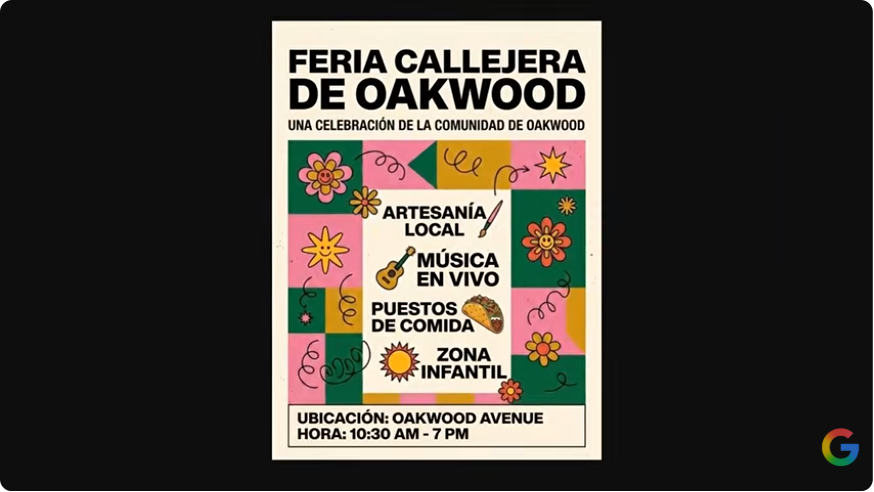
From a slide with a lawn mower photo, open Edit with Google Pics, prompt “Stage this lawn mower in a modern backyard with warm lighting…”, then Replace image.
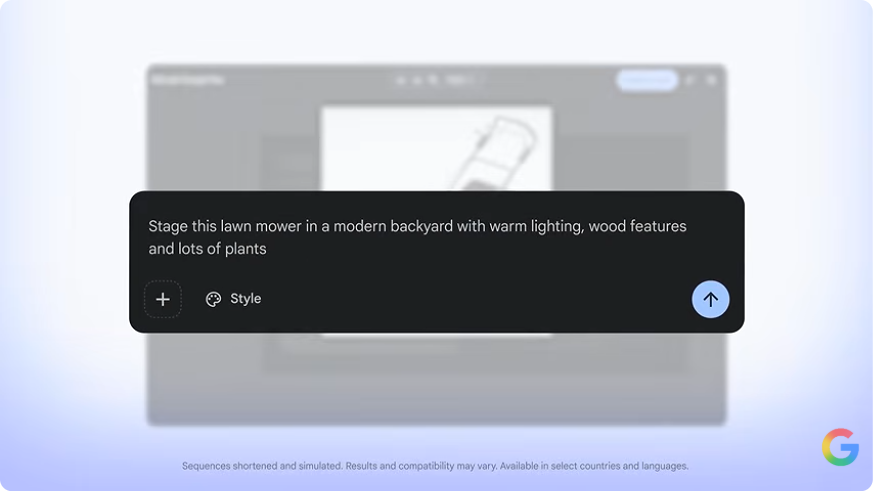
The Sep 1, 2026 post lists: multiple variations, localized edits, editing/reformatting/translating text, cropping for web/social/print, 2K/4K upscaling, version history and one-click editing in Docs/Slides. Rollout: Rapid Release from Sep 1, Scheduled Release from Sep 15, 2026.
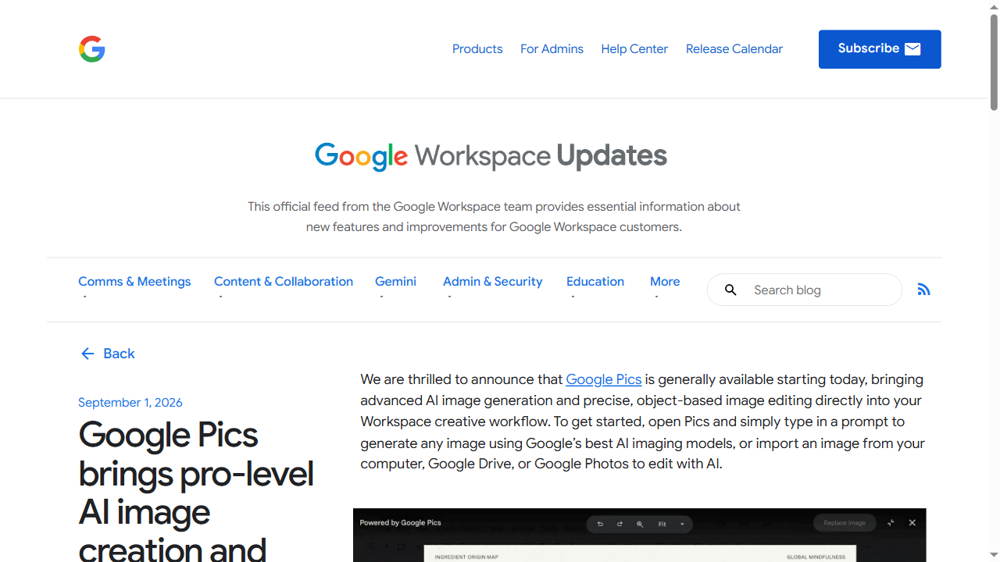
Main messages: “Boundless AI image generation meets precision editing” and “No more ‘prompt-and-pray’”. A banner says Pics is still rolling out.
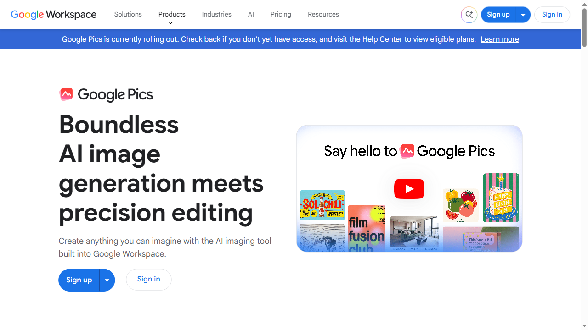
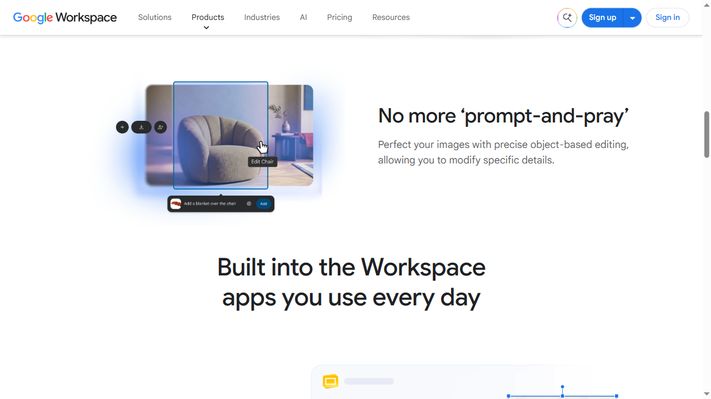
Get started with Google Pics covers two ways to start (upload / prompt), reference images and Style reference, plus related articles on editing, downloading, prompting, and Slides/Docs/Drive.
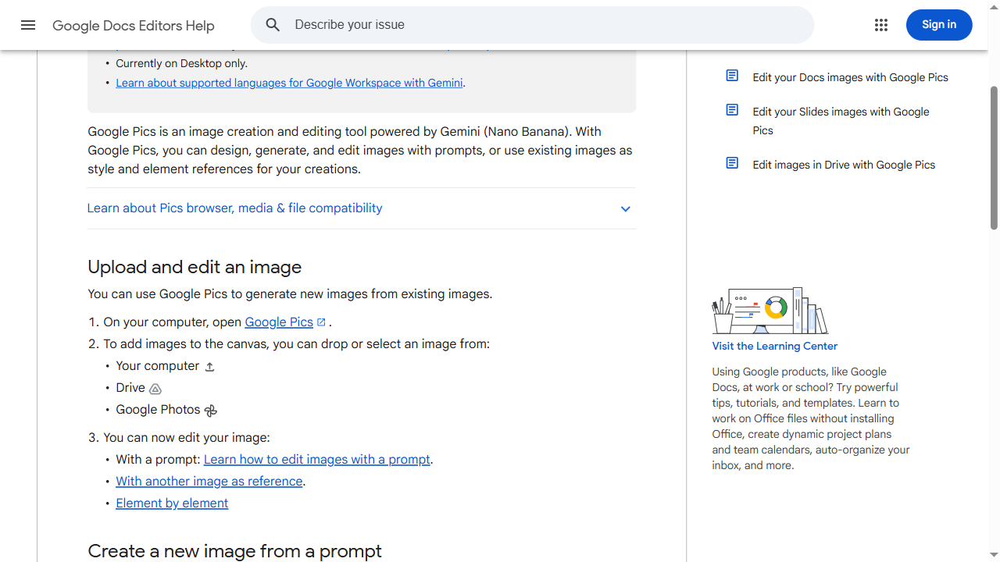
pics.new redirects to accounts.google.com with a continue URL to docs.google.com/images/u/0/create. That is why an eligible Workspace account is needed. In Part B I signed in manually once in a dedicated Chrome profile and let the script do the rest — it never types an email or password.
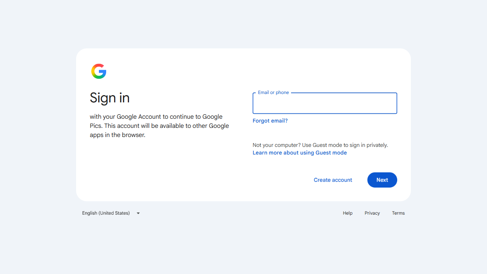
Scenario: create an internal event banner “SCUTI AI — AI QUEST 2026” with the red dragon mascot, edit only the dragon, translate the text into Vietnamese, try a different frame ratio, export a 2K copy; finally run the same prompt in the Gemini app (NanoBanana) for comparison. The whole session (3 min 11 s) was recorded in one take — see Section 6.
--user-data-dir=D:\chrome-profiles\ai-quest, close Chrome, then run
python record_pics_live.py. The script drives the UI, captures images/step-12…19, downloads images/pics-final-2k.jpg and records video/google-pics-live-session.mp4.
Note: every visit to pics.new creates a new image file in Drive.
pics.new immediately creates a new Pics file (stored in Drive, URL docs.google.com/images/d/…). Minimal UI: a drop zone (Upload / Drive / Photos), the prompt bar “Bring your ideas to life with Gemini” with + (reference images) and Style; the top bar has Undo/Redo and a default 16:9 frame.
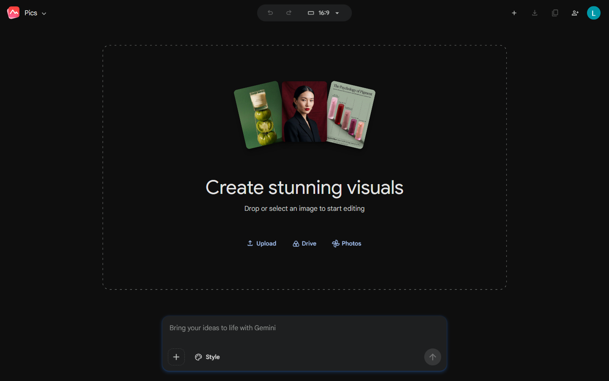
A 16:9 tech banner for "SCUTI AI - AI QUEST 2026". Bold headline "SCUTI AI", subtitle "Build. Learn. Ship with AI.". A cute red dragon mascot beside young Vietnamese engineers with laptops, glowing AI chat bubbles. Night city skyline, navy and red palette, flat vector style, footer "scuti.asia".
Subject → setting → style → palette → layout, with the text to render in double quotes.
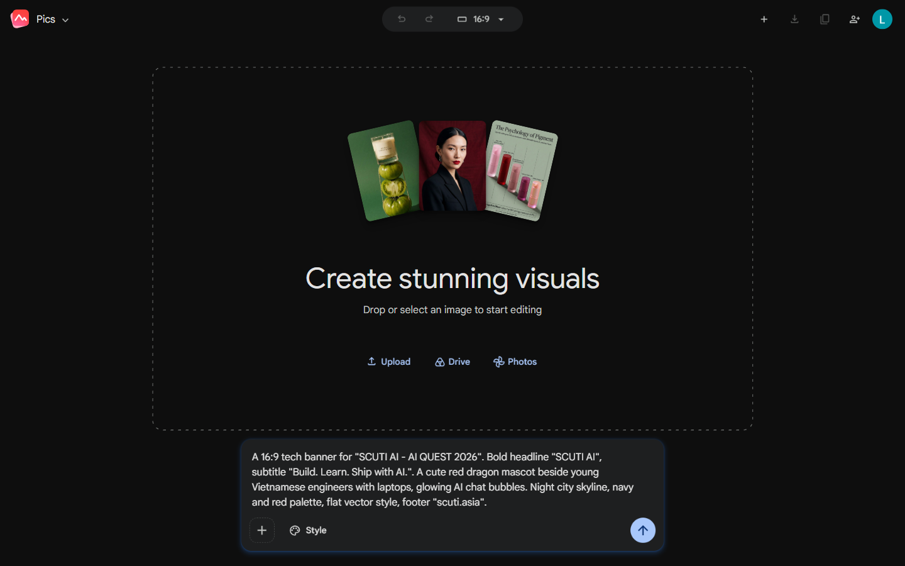
After Submit, about 15 seconds later Pics returns 4 variations in the left panel, each with a different layout. Click a thumbnail to preview, ✓ Confirm to keep it, or ↻ Generate again. In the chosen version “SCUTI AI”, “AI QUEST 2026” and “scuti.asia” are all spelled correctly. Pics also auto-named the file “Scuti AI Quest Banner”.
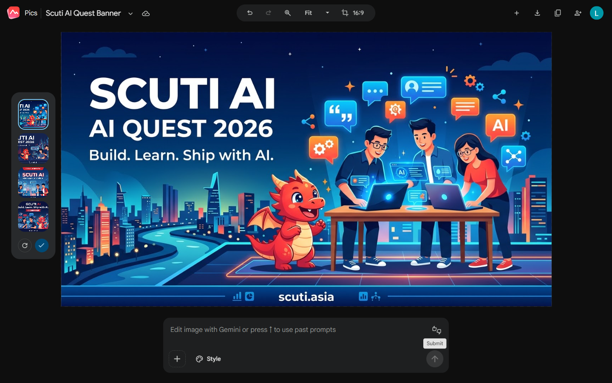
After Confirm, Pics runs “Detecting objects…”. Clicking the dragon outlines it and opens “Describe changes for the cartoon dragon” — Pics names the object itself. Type the change → Add → the bottom bar shows Discard / Apply 1 edit (several edits can be queued and applied together).
Make the dragon wave its hand and wear a small orange scarf with the text AI
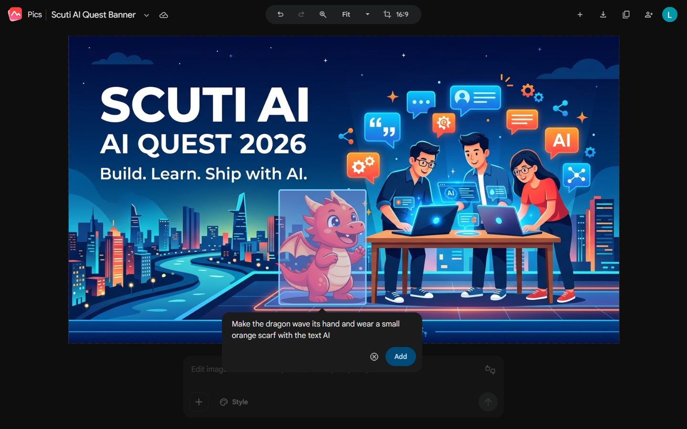
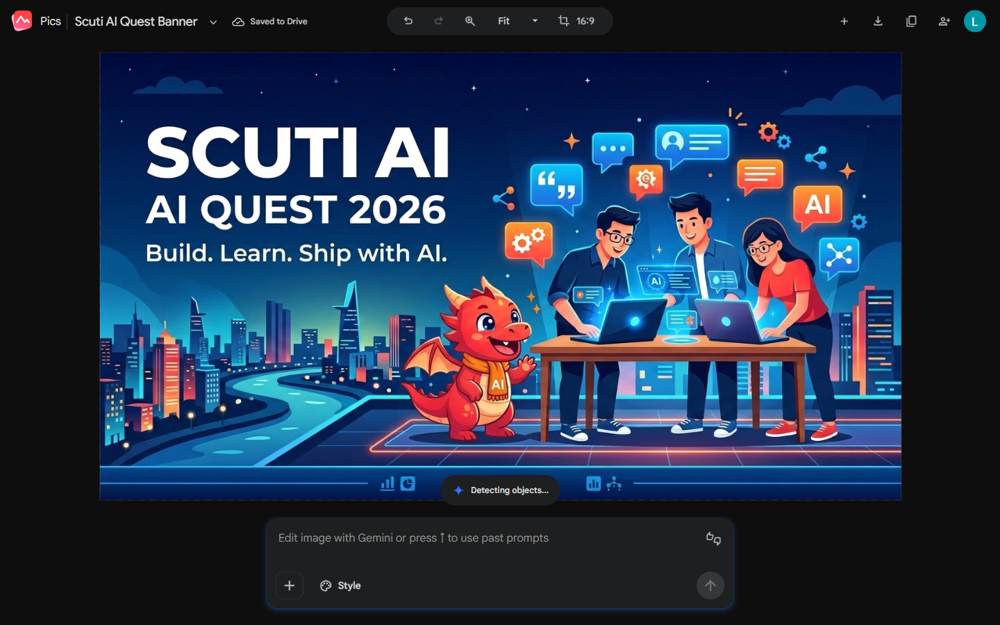
Translate all text in this banner into Vietnamese. Keep "SCUTI AI" and "scuti.asia" unchanged. Keep the same fonts, colors and layout.
Result: “Xây dựng. Học hỏi. Ra mắt với AI.” — Vietnamese diacritics render correctly in the same font and position; “SCUTI AI” and “scuti.asia” are kept as asked. Interesting: Pics also translated the event name “AI QUEST 2026” into “CHINH PHỤC AI 2026” — list every proper noun you want to keep. The translation turn also returned 4 variations.
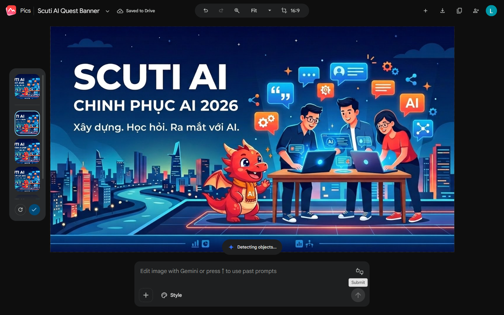
Click the ratio button (16:9) → Transform – Adjust your frame with 16:9, 4:3, 3:2, 5:4, 1:1 (⋮ for more), a -90°…+90° rotation dial, zoom, Reset and Exit. The screenshot shows a 1:1 frame (for social posts); in the demo I switched back to 16:9 and exited to keep the banner.
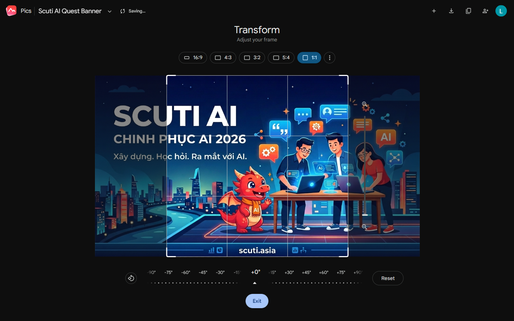
The Export icon (top right) offers Original size (1365×768), 2K JPEG and 4K JPEG (“Upscale with Gemini”). The 2K download took about 15 seconds; the actual file is 2752×1536 (~0.5 MB).
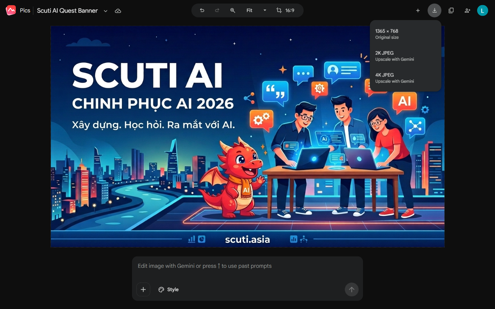
images/pics-final-2k.jpg)In gemini.google.com with the same account, send Create an image: <Step 13 prompt>. After about 25 seconds Gemini returns one image in the chat. Text rendering is on par with Pics (same NanoBanana foundation), but editing the dragon means describing it again in words in the next turn — no click-to-select, no variations panel, no Transform or 2K/4K export.
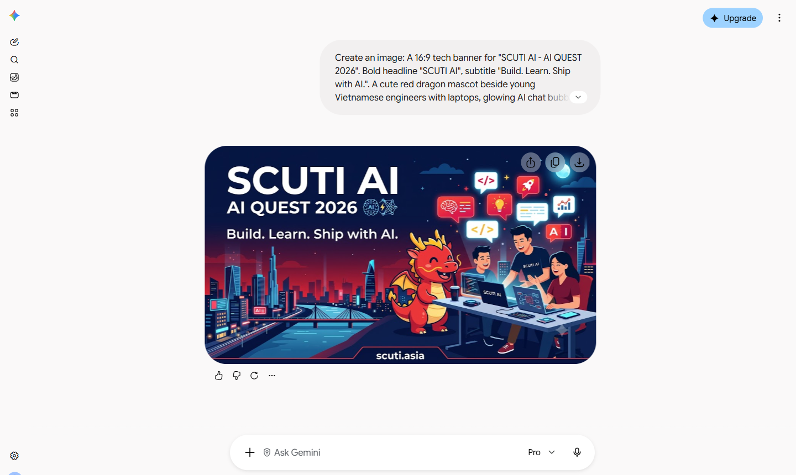
| Check | Google Pics | Gemini (NanoBanana) |
|---|---|---|
| Options per turn | 4 (left panel, Confirm / Generate again) | 1 image in chat |
| “SCUTI AI”, “scuti.asia” spelled correctly? | Yes | Yes |
| Vietnamese diacritics after translation | Correct, same font & position (but it also translated the event name) | Not tested in this run |
| Element edit keeps the rest intact? | Yes — only the dragon changed | No element selection; edit by describing in words |
| Generation time (measured) | ~15 s per turn (create, edit, translate); 2K export ~15 s | ~25 s per image |
| Export | Original 1365×768, 2K (2752×1536), 4K | Download from chat |
The complete video records the whole process with Playwright: official sources (YouTube, Workspace Updates, product page, Help Center) → real use of Google Pics (prompt → 4 variations → dragon edit → Vietnamese translation → Transform → 2K export) → the same prompt in the Gemini app → the finished blog scrolled top to bottom.
File: video/google-pics-vs-nanobanana-demo.mp4 (complete video). The Pics + Gemini part alone: video/google-pics-live-session.mp4 (3:11).
pics.new goes straight to the Sign in page.| Situation | How to use Pics | Use the NanoBanana API instead when… |
|---|---|---|
| Client proposals / demo slides | In Slides: click image → Edit image → stage the product in the client's context → Replace image | You need images generated automatically for whole decks |
| Internal event posters (AI Quest, team building) | Prompt → pick a variation → edit elements → download 2K for print | — |
| Vietnamese – Japanese – English materials | One prompt to translate text in an infographic/banner, layout preserved | Large batches through a pipeline |
| UI mockups / project doc illustrations | Upload screenshots, use Style reference for a consistent look | Generating test image data for apps |
| Social / recruiting visuals | Crop 1:1, 4:5, 16:9 from one master; share as Editor with HR | Scheduled automatic post generation |
| AI features for clients | Use Pics to prototype prompts and lock in a style | Always use the API inside Scuti's products |
Google Pics is not a new model — it is NanoBanana packaged as a design tool inside Workspace: variations, element-level edits, text editing/translation, crop, 2K/4K, version history, sharing and Slides/Docs/Drive integration. If you need precise edits and teamwork in Workspace, use Pics. If you need automation and scale, use NanoBanana through the API.
record_pics_live.py to reproduce this demo.